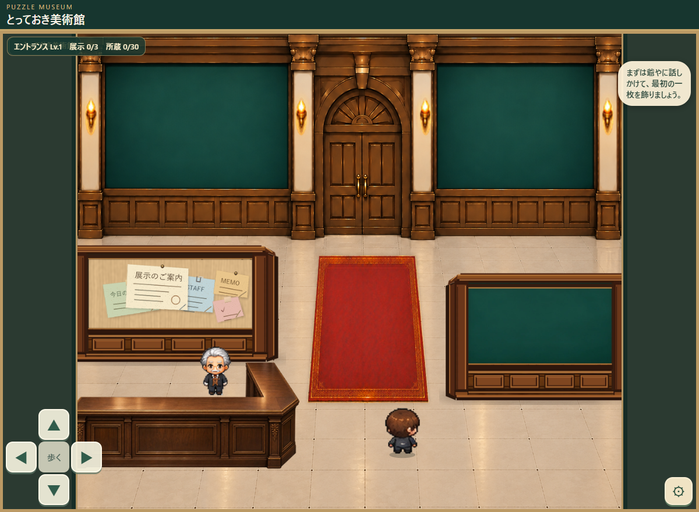

上のボタンで切り替えてください。iPhoneでも「拡大する」で細部を確認できます。
A案｜カーペット＋照明既存独立素材を配置

拡大後は指でスクロールできます。
旧素材の赤絨毯と柱灯（本体＋発光）を使用。中央の空きスペースを使い、受付・仕切り壁・人物を隠さない位置へ調整しています。
現在は配置の見た目だけを比較します。 当たり判定、保存、ゲーム本体への組み込みは未実施です。B・C案の前景植物と台座は、旧画面で下端が切れるよう作られた素材のため、現在の操作UIとの重なりも確認してください。どの案も正式採用ではありません。